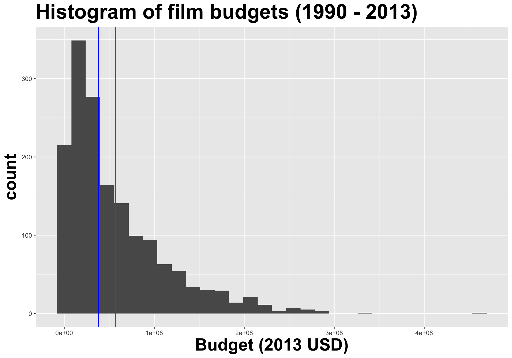
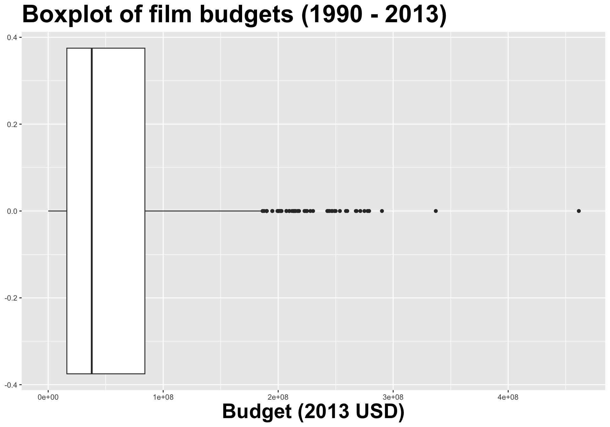
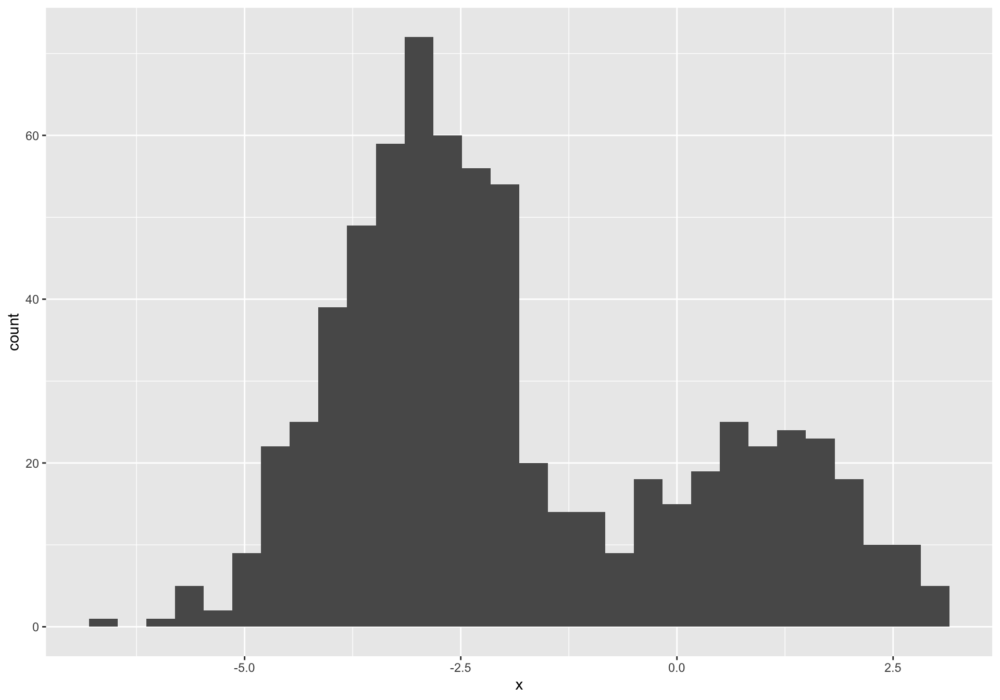
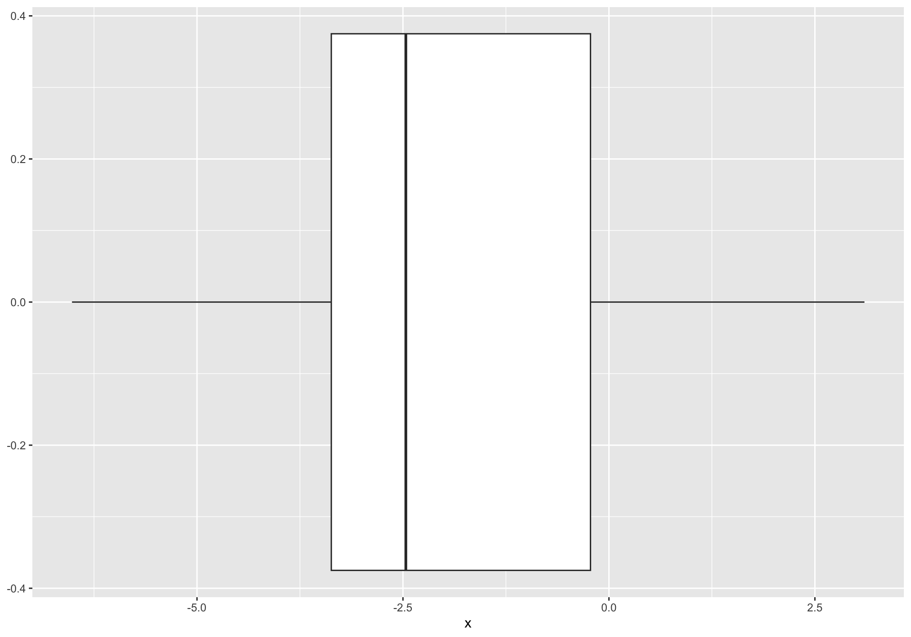

films <-read_csv("data/films.csv")films |>mutate(Films =if_else(is.na(Films), "(I can't recall)", Films)) |>mutate(Films =fct_lump_min(Films, min =6, other_level ="Other")) |>filter(Films !="Other") |>mutate(Films =fct_infreq(Films)) |>ggplot(aes(y = Films)) +geom_bar(fill ="skyblue") +theme_minimal() +labs(y ="",title ="What's the last film you saw in a theater?",subtitle ="From the sta199-s26 survey",caption ="(Films with fewer than 6 responses were omitted for readability.)")
“We did a statistical analysis of films to test two claims: first, that films that pass the Bechdel test — featuring women in stronger roles — see a lower return on investment, and second, that they see lower gross profits. We found no evidence to support either claim.”
ae-02-bechdel-dataviz
Go to RStudio, confirm that you’re in the ae project, and open the document ae-02-bechdel-dataviz.qmd.
Recap: Code cells (aka code chunks)
. . .
Cell labels are helpful for describing what the code is doing, for jumping between code cells in the editor, and for troubleshooting
message: false hides any messages emitted by the code in your rendered document
Describing distributions and relationships
Talking about one numerical variable


center: what is the “typical” value (mean, median, mode) the data are concentrating around?
spread: how concentrated are the data around a typical value?
shape: does the distribution have one peak, or many? is it symmetric or skewed?
Interaction between shape and center
Histograms provide more detail…


…but boxplots are nice for side-by-side comparisons
 . . .
. . .